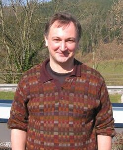

Vladimir Voevodsky | |
|---|---|
| Владимир Воеводский | |
 Voevodsky in 2011 | |
| Born | Vladimir Alexandrovich Voevodsky 4 June 1966 |
| Died | 30 September 2017 (aged 51) Princeton, New Jersey, United States |
| Alma mater | Moscow State University Harvard University |
| Awards | Fields Medal (2002) |
| Scientific career | |
| Fields | Mathematics |
| Institutions | Institute for Advanced Study |
| David Kazhdan | |
{kind=link}
Vladimir Alexandrovich Voevodsky (/vɔɪɛˈvɒdski/, Russian: Влади́мир Алекса́ндрович Воево́дский; 4 June 1966 – 30 September 2017) was a Russian-American mathematician. His work in developing a homotopy theory for algebraic varieties and formulating motivic cohomology led to the award of a Fields Medal in 2002. He is also known for the proof of the Milnor conjecture and motivic Bloch–Kato conjectures and for the univalent foundations of mathematics and homotopy type theory.
Early life and education
Vladimir Voevodsky's father, Aleksander Voevodsky, was head of the Laboratory of High Energy Leptons in the Institute for Nuclear Research at the Russian Academy of Sciences. His mother Tatyana was a chemist.[1] Voevodsky attended Moscow State University for a while, but was expelled without a diploma for refusing to attend classes and failing academically.[1] He received his Ph.D. in mathematics from Harvard University in 1992 after being recommended without even applying and without a formal college degree, following several independent publications;[1] he was advised there by David Kazhdan.
While he was a first year undergraduate, he was given a copy of "Esquisse d'un Programme" (submitted a few months earlier by Alexander Grothendieck to CNRS) by his advisor George Shabat. He learned the French language "with the sole purpose of being able to read this text" and started his research on some of the themes mentioned there.[2]
Work
This section needs more citations. (August 2023) |
Voevodsky's work was in the intersection of algebraic geometry with algebraic topology. Along with Fabien Morel, Voevodsky introduced a homotopy theory for schemes. He also formulated what is now believed to be the correct form of motivic cohomology, and used this new tool to prove Milnor's conjecture relating the Milnor K-theory of a field to its étale cohomology.[3] For the above, he received the Fields Medal at the 24th International Congress of Mathematicians held in Beijing, China.[4]
In 1998 he gave a plenary lecture (A1-Homotopy Theory) at the International Congress of Mathematicians in Berlin.[5] He coauthored (with Andrei Suslin and Eric M. Friedlander) Cycles, Transfers and Motivic Homology Theories, which develops the theory of motivic cohomology in some detail.
From 2002, Voevodsky was a professor at the Institute for Advanced Study in Princeton, New Jersey.
In January 2009, at an anniversary conference in honor of Alexander Grothendieck, held at the Institut des Hautes Études Scientifiques, Voevodsky announced a proof of the full Bloch–Kato conjectures.
In 2009, he constructed the univalent model of Martin-Löf type theory in simplicial sets. This led to important advances in type theory and in the development of new univalent foundations of mathematics that Voevodsky worked on in his final years. He worked on a Rocq (then: Coq) library UniMath using univalent ideas.[1][6]
In April 2016, the University of Gothenburg awarded an honorary doctorate to Voevodsky.[7]
Death and legacy
Voevodsky died on 30 September 2017 at his home in Princeton, New Jersey, aged 51, from an aneurysm.[1][8] He was survived by his daughters, Diana Yasmine Voevodsky and Natalia Dalia Shalaby.[1]
Selected works
- Voevodsky, Vladimir; Suslin, Andrei; Friedlander, Eric M. (2000). Cycles, transfers, and motivic homology theories. Annals of Mathematics Studies. Vol. 143. Princeton University Press. ISBN 9781400837120.[9]
- Mazza, Carlo; Voevodsky, Vladimir; Weibel, Charles A. (2011). 'Lecture notes on motivic cohomology. Clay Mathematics Monographs. Vol. 2. American Mathematical Society. ISBN 9780821853214.[10][11]
Notes
- ^ a b c d e f Rehmeyer, Julie (6 October 2017). "Vladimir Voevodsky, Revolutionary Mathematician, Dies at 51". New York Times.
- ^ See the autobiographical story in Voevodsky, Vladimir. "Univalent Foundations" (PDF). Institute for Advanced Study.
- ^ Morel, F. (1998). "Voevodsky's proof of Milnor's conjecture". Bulletin of the American Mathematical Society. 35 (2): 123–144. doi:10.1090/S0273-0979-98-00745-9. ISSN 0273-0979.
- ^ The second medal at the same congress was received by Laurent Lafforgue
- ^ Voevodsky, Vladimir (1998). "A1-homotopy theory" (PDF). In: Proceedings of the International Congress of Mathematicians. Vol. 1. pp. 579–604.
- ^ UniMath: This coq library aims to formalize a substantial body of mathematics using the univalent point of view, Univalent Mathematics, 2017-10-07, retrieved 2017-10-07
- ^ "Fields medalist Vladimir Voevodsky new honorary doctor at the IT Faculty". 30 June 2016. Archived from the original on 18 September 2016. Retrieved 1 October 2017.
- ^ "IAS: Vladimir Voevodsky, Fields Medalist, Dies at 51". 30 September 2017. Retrieved 2017-09-30.
- ^ Weibel, Charles A. (2002). "Review of Cycles, transfers, and motivic homology theories by Vladimir Voevodsky, Andrei Muslin, and Eric M. Friedlander" (PDF). Bull. Amer. Math. Soc. (N.S.). 39 (1): 137–143. doi:10.1090/s0273-0979-01-00930-2. Archived from the original (PDF) on 2020-10-18. Retrieved 2017-10-06.
- ^ Lecture notes on motivic cohomology at AMS Bookstore
- ^ "Review: Lecture Notes on Motivic Cohomology, European Mathematical Society". Archived from the original on 2020-12-30. Retrieved 2017-10-06.
References
- Friedlander, Eric M.; Rapoport, Michael; Suslin, Andrei (2003). "The mathematical work of the 2002 Fields medalists" (PDF). Notices Amer. Math. Soc. 50 (2): 212–217. Archived from the original (PDF) on 2020-12-21. Retrieved 2017-10-06.
Further reading
- More information about his work can be found on his website.
- The Voevodsky memorial page contains a near complete listing of his published and unpublished papers, talks, and works-in-progress.
External links
- Vladimir Voevodsky on GitHub Contains the slides of many of his recent lectures.
- По большому филдсовскому счету Интервью с Владимиром Воеводским и Лораном Лаффоргом
- Julie Rehmeyer, Vladimir Voevodsky, Revolutionary Mathematician, Dies at 51, New York Times, 6 October 2017
- O'Connor, John J.; Robertson, Edmund F., "Vladimir Voevodsky", MacTutor History of Mathematics Archive, University of St Andrews
- Vladimir Voevodsky at the Mathematics Genealogy Project